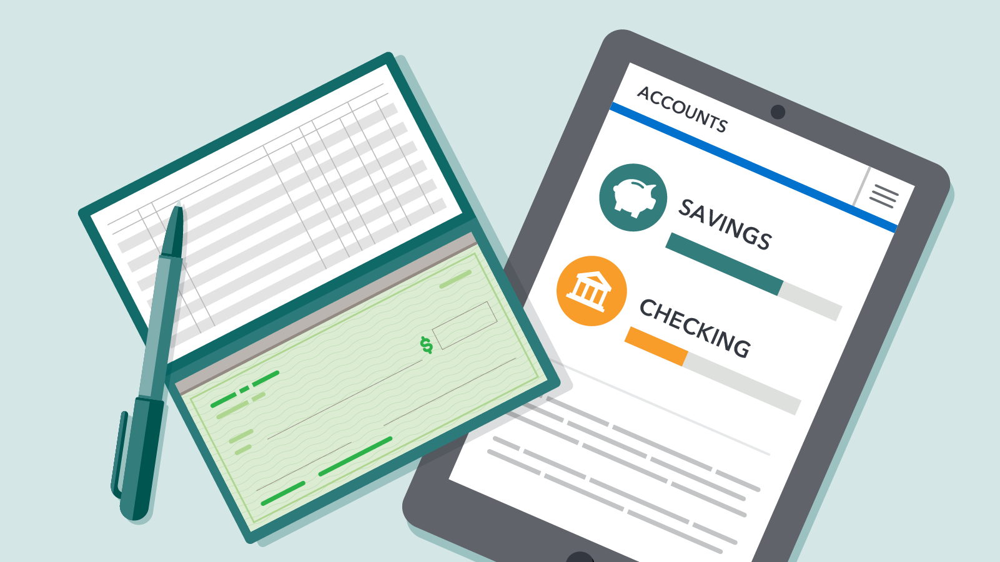

What are accounts?
When saving, spending, or investing, there are many different types of accounts.
You are likely familiar with a checking and savings account already. Accounts are simply a space to store money, and
each comes with different privledges and restrictions.

Account Types
Checking
A checking account is great for easy access to money. It generally earns no interest, and has little restrictions on
transactions and withdrawls. Many checking accounts have a minimum balance requirement.
Savings
Savings accounts have higher interest rates than checking accounts, but are not a great for easy access. Most savings
accounts cannot be used as debit, and must have money transferred out.
Certificate of Deposit (CD)
Certificates of deposit or CD, allow you to save your money at a set interest rate for a pre-set period of time - which
can range from a few months to several years. CDs often have higher interest rates than traditional savings accounts
because the money you deposit is tied up for the terms of the CD. Be sure you will not need the funds before the end of
the CD term, as early withdrawals may have financial penalties.
Money market account
Money market accounts are similar to savings accounts, but they typically require you to
maintain a higher balance to avoid a monthly service fee. Both savings and money market accounts have variable rates.
Money
market accounts can have tiered interest rates, providing more favorable rates based on higher balances. Some money
market accounts also allow you to write checks against your funds, but may be on a more limited basis.
Traditional Individual Retirement Account (IRA) and 401(k)
IRAs, or Individual Retirement Accounts, allow you to save independently for your
retirement. A traditional IRA and 401(k) take pre-tax income, and distributions are taxed. A great benefit is being able
to lower
your taxable income each year. The limit for contributions to IRA is $6,000 (pre-tax), and 401(k) is around $40,000.
Roth IRA and 401(k)
A Roth IRA/401(k) is identical to a Traditional IRA/401(k), except that taxes are paid when money in added (i.e, you can
only put
post-tax income into a Roth IRA). Generally, a Roth IRA/401(k) is a better option when you are young and your income is
lower
than what you would have near retirement. The limit for contributions is also $6,000 (post-tax).
A special note is that Roth IRA can have withdrawals at any time (excluding profit), since you have already paid taxes
on the money. Roth 401(k) has a 5-year restriction on withdrawals. You are also allowed to withdraw up to $10,000 in
profit from a roth IRA towards your first home purchase.
Health Savings Account (HSA)
An HSA is a triple-advantaged account that has a smaller contribution limit of $2,000. Contributions can be made
pre-tax, and qualified distributions are tax-free. HSA qualified distributions are for health-related expenditures.